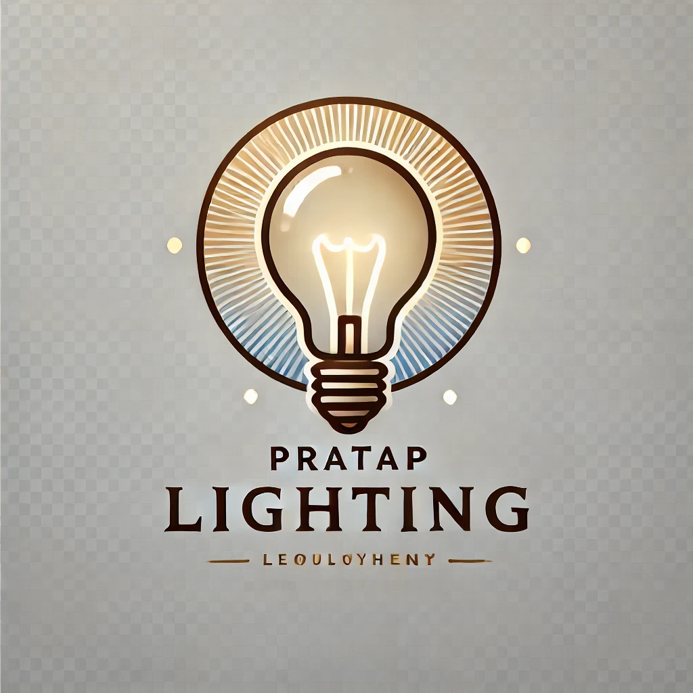

Professional Experience
Multi Project Fellow(Software Engineer)
- Led development of 2 data-driven projects, processing datasets with over 500,000 data points to create interactive
dashboards for real estate insights, improving decision-making for over 4 stakeholders.
- Leveraged ARIMA-based machine learning models for trend identification and business metric definition enhancing predicting analytics,
using Python and SQL for optimized strategic decision-making.
Graduate Student Course Assistant
- Tutor, grader, course preparer, and assignment designer for a class of 89 students.
- Conducted office hours to clarify concepts and doubts of students.
- Directed students with projects related to data, statistical analysis and machine learning.
Software Development Engineer

- Established and maintained customer-facing e-commerce platform using React and Node.js, improving order processing time by 30% and
driving a 15% increase in customer engagement.
- Collaborated cross-functionally with sales and support teams to gather customer feedback and iterated on the platform’s features, resulting
in a 20% reduction in support tickets related to order issues.
- Optimized backend infrastructure by refactoring database queries and implementing caching mechanisms, reducing page load times by
35% and improving overall site performance.
Web Development Intern
- Completed provided training on Web Development by professional mentors.
- Studied and engaged in with languages and frameworks such as HTML, SQL, PHP, CSS, Bootstrap.
- Created project named "Protein Database Management" according to requirements.
Research Intern
- Demonstrated assigned work on “Session-based Recommendation Systems” using GRU model of RNN.
- Performed experiments on datasets resulted in marked improvements over common approaches.
- Acquired an opportunity to work on Item-based Collaborative Filtering Recommendation Algorithm along with Session-based Recommendation System.
Back to Home